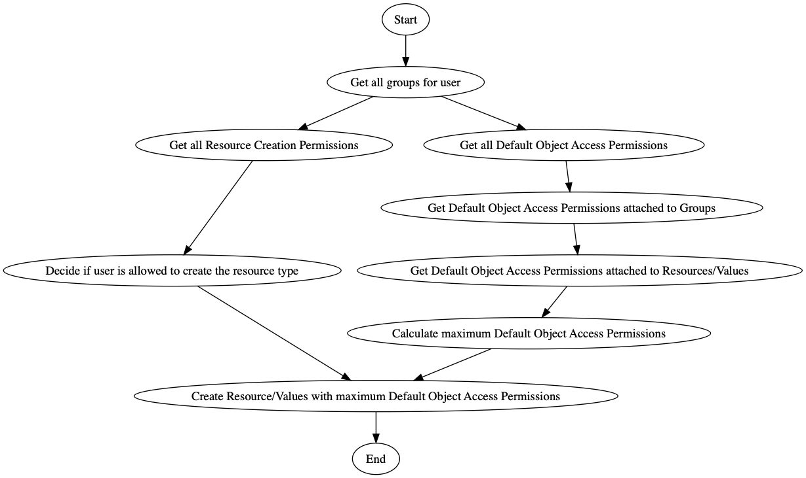
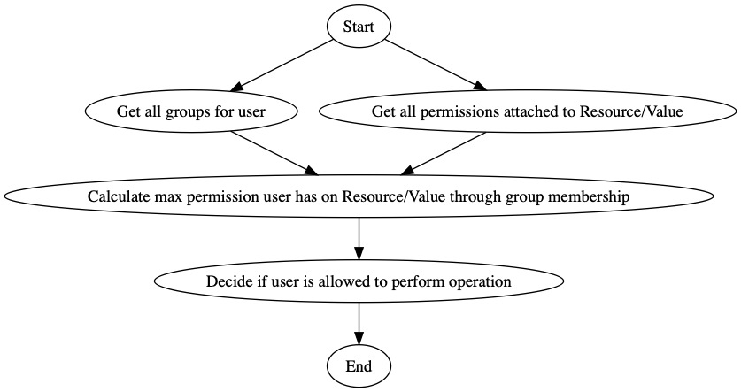
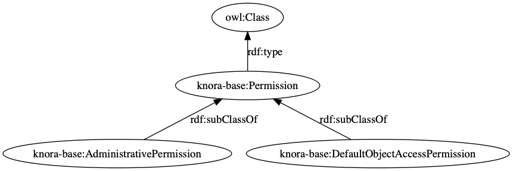

Administration (Users, Projects, Groups, Institutions, Permissions)
Scope
This Section includes management (creation, updating, deletion) of Users, Projects, Groups, Institutions, and Permissions.
Implementation
All administration functions will be implemented as part of the Knora API in the webapi codebase. There is also a separate web-application as part of the salsah codebase using this API, allowing basic management operations.
Overview
During the initial deployment of a Knora server, the main administration user (*root*) is created. This root user has the right to do anything.
Knora’s concept of access control is that permissions can only be granted to groups (or the whole project, i.e. all members of a project) and not to individual users. There are two distinct ways of granting permission. Firstly, an object (a resource or value) can grant permissions to groups of users, and secondly, permissions can be granted directly to a group of users (not bound to a specific object). There are six built-in groups: UnknownUser, KnownUser, Creator, ProjectMember, ProjectAdmin, and SystemAdmin. These groups can be used in the same way as normal user created groups for permission management, i.e. can be used to give certain groups of users, certain permissions, without the need to explicitly create them.
A user becomes implicitly a member of such a group by satisfying certain conditions:
-
knora-base:UnknownUser:
Any user who has not logged into Knora is automatically assigned to this group. -
knora-base:KnownUser:
Any user who has logged into Knora is automatically assigned to this group. -
knora-base:Creator:
When checking a user’s permissions on an object, the user is automatically assigned to this group if he is the creator of the object. -
knora-base:ProjectMember:
When checking a user’s permissions, the user is automatically assigned to this group by being a member of a project designated by theknora-base:isInProjectproperty. -
knora-base:ProjectAdmin:
When checking a user’s permission, the user is automatically assigned to this group through theknora-base:isInProjectAdminGroupproperty, which points to the project in question. -
knora-base:SystemAdmin:
Membership is received by setting the propertyknora-base:isInSystemAdminGrouptotrueon aknora-base:User.
To use these build-in groups as values for properties (Object Access and Default Permissions), the IRI is constructed by appending the name of the built-in group to knora-base, e.g., knora-base:KnownUser where knora-base corresponds to http://www.knora.org/ontology/knora-base#.
Permissions
Up until know, we have mentioned two groups of permissions. The first called object access permissions, which contains permissions that point from explicit objects (resources/values) to groups. The second group of permissions called administrative permissions, and which contains permissions that are put on instances of knora-base:Permission objects directly affecting groups. There is another, third group of permissions, called default object access permissions which is also put on instances of knora-base:Permission, and which also directly affect groups.
Object Access Permissions
An object (resource / value) can grant the following permissions, which are stored in a compact format in a single string, which is the object of the predicate knora-base:hasPermissions:
- Restricted view permission (RV): Allows a restricted view of the object, e.g. a view of an image with a watermark.
- View permission (V): Allows an unrestricted view of the object. Having view permission on a resource only affects the user’s ability to view information about the resource other than its values. To view a value, she must have view permission on the value itself.
- Modify permission (M): For values, this permission allows a new version of a value to be created. For resources, this allows the user to create a new value (as opposed to a new version of an existing value), or to change information about the resource other than its values. When he wants to make a new version of a value, his permissions on the containing resource are not relevant. However, when he wants to change the target of a link, the old link must be deleted and a new one created, so he needs modify permission on the resource.
- Delete permission (D): Allows the item to be marked as deleted.
- Change rights permission (CR): Allows the permissions granted by the object to be changed.
Each permission in the above list implies all lower-numbered permissions.
A user’s permission level on a particular object is calculated in the following way:
- Make a list of the groups that the user belongs to, including Creator and/or ProjectMember and/or ProjectAdmin if applicable.
- Make a list of the permissions that she can obtain on the object, by iterating over the permissions that the object grants. For each permission, if she is in the specified group, add the specified permission to the list of permissions she can obtain.
- From the resulting list, select the highest-level permission.
- If the result is that she would have no permissions, give her whatever permission UnknownUser would have.
The format of the object of knora-base:hasPermissions is as follows:
- Each permission is represented by the one-letter or two-letter abbreviation given above.
- Each permission abbreviation is followed by a space, then a comma-separated list of groups that the permission is granted to.
- The IRIs of built-in groups are shortened using the knora-base prefix.
- Multiple permissions are separated by a vertical bar (|).
For example, if an object grants view permission to unknown and known users, and modify permission to project members, the resulting permission literal would be: :
V knora-base:UnknownUser,knora-base:KnownUser|M knora-base:ProjectMember
Administrative Permissions
The following permissions can be set via instances of knora-base:AdministrativePermission on any group belonging to a project. For users that are members of a number of groups with administrative permissions attached, the final set of permissions is additive and most permissive. The administrative permissions are stored in a compact format in a single string, which is the object of the predicate knora-base:hasPermissions attached to an instance of the knora-base:AdministrativePermission class. The following permission values can be used:
-
Resource / Value Creation Permissions:
1) ProjectResourceCreateAllPermission:
- description: gives the permission to create resources inside the project.
- usage: used as a value for knora-base:hasPermissions.
2) ProjectResourceCreateRestrictedPermission:
- description: gives restricted resource creation permission inside the project.
- usage: used as a value for knora-base:hasPermissions.
- value:
RestrictedProjectResourceCreatePermissionfollowed by a comma-separated list of ResourceClasses the user should only be able to create instances of.
-
Project Administration Permissions:
1) ProjectAdminAllPermission:
- description: gives the user the permission to do anything on project level, i.e. create new groups, modify all existing groups (*group info*, group membership, resource creation permissions, project administration permissions, and default permissions).
- usage: used as a value for knora-base:hasPermissions.
2) ProjectAdminGroupAllPermission:
- description: gives the user the permission to modify group info and group membership on all groups belonging to the project.
- usage: used as a value for the knora-base:hasPermissions property.
3) ProjectAdminGroupRestrictedPermission:
- description: gives the user the permission to modify group info and group membership on certain groups belonging to the project.
- usage: used as a value for knora-base:hasPermissions
- value:
ProjectGroupAdminRestrictedPermissionfollowed by a comma-separated list ofknora-base:UserGroup.
4) ProjectAdminRightsAllPermission:
- description: gives the user the permission to change the permissions on all objects belonging to the project (e.g., default permissions attached to groups and permissions on objects).
- usage: used as a value for the knora-base:hasPermissions property.
-
Ontology Administration Permissions:
1) ProjectAdminOntologyAllPermission:
- description: gives the user the permission to administer the project ontologies
- usage: used as a value for the knora-base:hasPermissions property.
The administrative permissions are stored in a compact format in a single string, which is the object of the predicate knora-base:hasPermissions attached to an instance of the knora-base:AdministrativePermission class.
- The format of the object of
knora-base:hasPermissionsis as follows:- Each permission is represented by the name given above.
- Each permission is followed by a space, then if applicable, by a comma separated list of IRIs, as defined above.
- The IRIs of built-in values (e.g., built-in groups, resource classes, etc.) are shortened using the knora-base prefix
knora-base:. - Multiple permissions are separated by a vertical bar (|).
For example, if an administrative permission grants the knora-base:ProjectMember group the permission to create all resources (*ProjectResourceCreateAllPermission*), the resulting administrative permission object with the compact form literal would be: :
<http://rdfh.ch/permissions/001
rdf:type knora-base:AdministrativePermission ;
knora-base:forProject <http://rdfh.ch/projects/00FF>;
knora-base:forGroup knora-base:ProjectMember ;
knora-base:hasPermissions "ProjectResourceCreateAllPermission"^^xsd:string .
Default Object Access Permissions
Default Object Access Permissions are used when new objects (resources and/or values) are created. They represent object access permissions with which the new object will be initially outfitted. As with administrative permissions, these default object access permissions can be defined for any number of groups. Additionally, they can be also defined for resource classes and properties.
The following default object access permissions can be attached to groups, resource classes and/or properties via instances of knora-base:DefaultObjectAccessPermission (described further bellow). The default object access permissions correspond to the earlier described object access permission:
-
Default Restricted View Permission (RV):
- description: any object, created by a user inside a group holding this permission, is restricted to carry this permission
- value:
RVfollowed by a comma-separated list ofknora-base:UserGroup
-
Default View Permission (V):
- description: any object, created by a user inside a group holding this permission, is restricted to carry this permission
- value:
Vfollowed by a comma-separated list ofknora-base:UserGroup
-
Default Modify Permission (M) accompanied by a list of groups.
- description: any object, created by a user inside a group holding this permission, is restricted to carry this permission
- value:
Mfollowed by a comma-separated list ofknora-base:UserGroup
-
Default Delete Permission (D) accompanied by a list of groups.
- description: any object, created by a user inside a group holding this permission, is restricted to carry this permission
- value:
Dfollowed by a comma-separated list ofknora-base:UserGroup
-
Default Change Rights Permission (CR) accompanied by a list of groups.
- description: any object, created by a user inside a group holding this permission, is restricted to carry this permission
- value:
CRfollowed by a comma-separated list ofknora-base:UserGroup
A single instance of knora-base:DefaultObjectAccessPermission must always reference a project, but can only reference either a group (knora-base:forGroup property), a resource class (knora-base:forResourceClass), a property (knora-base:forProperty), or a combination of resource class and property.
Example default object access permission instance:
<http://rdfh.ch/permissions/002
rdf:type knora-base:DefaultObjectAccessPermission ;
knora-base:forProject <http://rdfh.ch/projects/00FF>;
knora-base:forGroup knora-base:ProjectMember ;
knora-base:hasPermissions "CR knora-base:Creator|M knora-base:ProjectMember|V knora-base:KnownUser"^^xsd:string .
This instance is setting default object access permissions to the project member group of a project, giving change right permission to the creator, modify permission to all project members, and view permission to known users. Further, this implicitly applies to all resource classes and all their properties inside the project.
Permission Precedence Rules
For both administrative permissions and default object access permissions, the resulting permissions are derived by applying precedence rules, for the case that the user is member of more than one group.
The following list is sorted by the permission precedence level in descending order:
- permissions on
knora-base:ProjectAdmin(highest level) - permissions on resource classes and property combination (own project)
- permissions on resource classes and property combination (
knora-base:SystemProject) - permissions on resource classes / properties (own project)
- permissions on resource classes / properties (
knora-base:SystemProject) - permissions on custom groups
- permissions on
knora-base:ProjectMember - permissions on
knora-base:KnownUser(lowest level)
The permissions on resource classes / properties are only relevant for default object access permissions.
Administrative Permissions: When a user performs an operation requiring administrative permissions, then only the permissions from the highest level are taken into account. If a user is a member of more than one group on the same level (only possible for custom groups) then the defined permissions are summed up and all are taken into account.
Default Object Access Permissions: When a user creates a resource or value, then only the default object permissions from the highest level are applied. If a user is a member of more than one group on the same level (only possible for custom groups) then the defined permissions are summed up and the most permissive are applied.
In the case of users belonging to the SystemAdmin group, but which are not members of a project and thus no group belonging to the project, the default object access permissions from the highest defined level will apply.
In the case of users belonging to the SystemAdmin group, but which are not members of a project and thus not members of any group belonging to the project, the default object access permissions from the ProjectAdmin, ProjectMember, or KnownUser group will be applied in the order of precedence. If no permissions are defined on either of these groups, then the resulting permission will be CR
knora-base:Creator.
Also, in the case that no default object access permissions are defined for the project, the resulting permission will be CR
knora-base:Creator.
Implicit Permissions
The knora-base:SystemAdmin group receives implicitly the following permissions:
- receives implicitly ProjectAllAdminPermission for all projects.
- receives implicitly ProjectResourceCreateAllPermission for all projects.
- receives implicitly CR on all objects from all projects.
Theses permissions are baked into the system, and cannot be changed.
Permission Templates
The permission capabilities of Knora are very large, as it needs to be able to satisfy a broad set of requirements. To simplify permission management for the users, we provide permission templates, which can be used during creation of new projects, or applied to existing projects. A permission template defines a set of administrative and default object access permission. Currently, two different templates will be defined OPEN, CLOSED.
Template: OPEN
The OPEN template defines the following permissions:
-
The
knora-base:ProjectAdmingroup:- receives explicitly ProjectResourceCreateAllPermission.
- receives explicitly ProjectAllAdminPermission.
-
The
knora-base:ProjectMembergroup:- receives explicitly ProjectResourceCreateAllPermission.
- receives explicitly CR for the knora-base:Creator and knora-base:ProjectAdmin group.
- receives explicitly M for the ProjectMember group.
- receives explicitly V for the knora-base:KnownUser group.
Template: CLOSED
The CLOSED template, defined the following permissions:
-
The
knora-base:ProjectAdmingroup:- receives explicitly ProjectResourceCreateAllPermission.
- receives explicitly ProjectAllAdminPermission.
-
The
knora-base:ProjectMembergroup:- receives explicitly ProjectResourceCreateAllPermission.
- receives explicitly CR for the knora-base:ProjectAdmin group.
- receives explicitly M for the ProjectMember group.
Default Permissions Matrix for new Projects
The access control matrix defines what are the default operations a subject (i.e. User), being a member of a built-in group (represented by row headers), is permitted to perform on an object (represented by column headers). The different operation abbreviations used are defined as follows:
-
C: Create - the subject inside the group is allowed to create the object.
-
U: Update - the subject inside the group is allowed to update the object.
-
R: Read - the subject inside the group is allowed to read all information about the object.
-
D: Delete - the subject inside the group is allowed to delete the object.
-
P: Permission - the subject inside the group is allowed to change the permissions on the object.
-
-: none - none or not applicable
| Built-In Group | Project | Group | User | Resource | Value |
|---|---|---|---|---|---|
| SystemAdmin | CRUD |
CRUDP |
CRUDP all |
CRUDP all |
CRUDP all |
| ProjectAdmin | -RUD |
CRUDP |
CRUDP +/- project |
CRUDP (in project) |
CRUDP (in project) |
| ProjectMember | ---- |
----- |
----- |
CRUD- (in project) |
----- (in project) |
| Creator | ---- |
----- |
----- |
-RUDP (his resource) |
----- (his value) |
| KnownUser | C--- |
C---- |
CRUD- himself |
R---- (in project) |
R---- (in project) |
Default Permissions Matrix for new Projects
Basic Workflows involving Permissions
Creating a new Resource

Accessing a Resource/Value

Project / Group Administration

Implementation
The requirements for defining default permissions imposed by all the different use cases are very broad. Potentially, we need to be able to define default permissions per project, per group, per resource class, per resource property, and all their possible combinations.
For this reason, we introduce the knora-base:Permission class with two sub-classes, namely knora-base:AdministrativePermission and knora-base:DefaultObjectAccessPermission, which instances will carry all the necessary information.
Permission Class Hierarchy and Structure
The following graphs show the class hierarchy and the structure of each permission class.
Permission Class Hierarchy

Administrative Permission Structure:
and the same as RDF:
<http://rdfh.ch/permissions/[UUID]> rdf:type knora-base:AdministrativePermission ;
knora-base:forProject <http://rdfh.ch/projects/[shortcode]> ;
knora-base:forGroup <http://rdfh.ch/groups/[shortcode]/[UUID]> ;
knora-base:hasPermissions "ProjectResourceCreateAllPermission|
ProjectResourceCreateRestrictedPermission "<Resource Class IRI>"|
ProjectAdminAllPermission|
ProjectAdminGroupAllPermission|
ProjectAdminGroupRestrictedPermission "<http://rdfh.ch/groups/[shortcode]/[UUID]>, <http://rdfh.ch/groups/[shortcode]/[UUID]>"|
ProjectAdminRightsAllPermission|
ProjectAdminOntologyAllPermission"^^xsd:string .
Default Object Access Permission Structure:

and the same as RDF:
<http://rdfh.ch/permissions/[UUID]> rdf:type knora-base:DefaultObjectAccessPermission ;
knora-base:forProject <http://rdfh.ch/projects/[shortcode]> ;
knora-base:forGroup <http://rdfh.ch/groups/[shortcode]/[UUID]> ;
knora-base:forResourceClass "Resource Class Name" ;
knora-base:forProperty "Resource Property Name" ;
knora-base:hasPermissions "RV <http://rdfh.ch/groups/[shortcode]/[UUID]>|
V <http://rdfh.ch/groups/[shortcode]/[UUID]>|
M <http://rdfh.ch/groups/[shortcode]/[UUID]>|
D <http://rdfh.ch/groups/[shortcode]/[UUID]>|
CR <http://rdfh.ch/groups/[shortcode]/[UUID]>"^^xsd:string .
Querying Permission Instances
The properties forProject and either of forGroup, forResourceClass, and forProperty form together a compound key, allowing finding existing permission instances, that address the same set of Project / Group / ResourceClass / Property combination, thus making it possible to extend or change the attached permissions.
Administrative Permission Instances: For each group inside the project, there can be zero or one instance holding administrative permission information. Querying is straitforward by using the knora-base:forProject and knora-base:forGroup properties as the compound key.
Default Object Access Permission Instances: For each group, resource class, or property inside the project, there can be zero or one instances holding default object access permission informations. Querying is straitforward by using the knora-base:forProject and either knora-base:forGroup, knora-base:forResourceClass, or knora-base:forProperty properties as part of the compound key.
Example Data stored in the permissions graph
Administrative permissions on a ‘ProjectAdmin’ group:
<http://rdfh.ch/permissions/[UUID]> rdf:type knora-base:AdministrativePermission ;
knora-base:forProject <http://rdfh.ch/projects/00FF> ;
knora-base:forGroup knora-base:ProjectAdmin ;
knora-base:hasPermissions "ProjectResourceCreateAllPermission|
ProjectAdminAllPermission"^^xsd:string .
Administrative permissions on a ‘ProjectMember’ group:
<http://rdfh.ch/permissions/[UUID]> rdf:type knora-base:AdministrativePermission ;
knora-base:forProject <http://rdfh.ch/projects/00FF> ;
knora-base:forGroup knora-base:ProjectMember ;
knora-base:hasPermissions "ProjectResourceCreateAllPermission"^^xsd:string .
Administrative permission restricting project admin permission on a group:
<http://rdfh.ch/permissions/[UUID]> rdf:type knora-base:Permission ;
knora-base:forProject <http://rdfh.ch/projects/[shortcode]> ;
knora-base:forGroup <http://rdfh.ch/groups/[shortcode]/[UUID]> ;
knora-base:hasPermissions "ProjectGroupAdminRestrictedPermission <http://rdfh.ch/groups/[shortcode]/[UUID]>"^^xsd:string .
Administrative permission restricting resource creation for a group:
<http://rdfh.ch/permissions/[UUID]> rdf:type knora-base:AdministrativePermission ;
knora-base:forProject <http://rdfh.ch/projects/[shortcode]> ;
knora-base:forGroup <http://rdfh.ch/groups/[shortcode]/[UUID]> ;
knora-base:hasPermissions "ProjectResourceCreateRestrictedPermission <http://www.knora.org/ontology/00FF/images#Person>"^^xsd:string .
Default object access permission on a ‘ProjectMember’ group:
<http://rdfh.ch/permissions/[UUID]> rdf:type knora-base:DefaultObjectAccessPermission ;
knora-base:forProject <http://rdfh.ch/projects/00FF> ;
knora-base:forGroup knora-base:ProjectMember ;
knora-base:hasPermissions "CR knora-base:Creator|
M <http://rdfh.ch/groups/[shortcode]/[UUID]>|
V knora-base:KnownUser"^^xsd:string .
Default object access permission on a resource class:
<http://rdfh.ch/permissions/[UUID]> rdf:type knora-base:DefaultObjectAccessPermission ;
knora-base:forProject <http://rdfh.ch/projects/[shortcode]> ;
knora-base:forResourceClass <http://www.knora.org/ontology/00FF/images#person> ;
knora-base:hasPermissions "CR knora-base:Creator,knora-base:ProjectMember|
V knora-base:KnownUser,knora-base:UnknownUser"^^xsd:string .
Default object access permission on a resource property:
<http://rdfh.ch/permissions/[UUID]> rdf:type knora-base:DefaultObjectAccessPermission ;
knora-base:forProject <http://rdfh.ch/projects/[shortcode]> ;
knora-base:forProperty <http://www.knora.org/ontology/00FF/images#lastname> ;
knora-base:hasPermissions "D knora-base:ProjectMember,knora-base:Creator|
V knora-base:KnownUser,knora-base:UnknownUser"^^ .
Default object access permission on a resource class and property:
<http://rdfh.ch/permissions/[UUID]> rdf:type knora-base:DefaultObjectAccessPermission ;
knora-base:forProject <http://rdfh.ch/projects/[shortcode]> ;
knora-base:forResourceClass <http://www.knora.org/ontology/00FF/images#person> ;
knora-base:forProperty <http://www.knora.org/ontology/00FF/images#lastname> ;
knora-base:hasPermissions "CR knora-base:Creator,knora-base:ProjectMember|
V knora-base:KnownUser,knora-base:UnknownUser"^^xsd:string .
Default object access permission on a knora-base property:
<http://rdfh.ch/permissions/[UUID]> rdf:type knora-base:DefaultObjectAccessPermission ;
knora-base:forProject knora-base:SystemProject ;
knora-base:forProperty <http://www.knora.org/ontology/knora-base#hasStillImageFileValue> ;
knora-base:hasPermissions "RV knora-base:UnknownUser|
V knora-base:KnownUser|
M knora-base:ProjectMember,knora-base:Creator"^^xsd:string .
A the time the user’s UserProfile is queried, all permissions for all projects and groups the user is a member of are also queried. This information is then stored as an easy accessible object inside the UserProfile, being readily available wherever needed. As this is a somewhat expensive operation, built-in caching mechanism at different levels (e.g., UsersResponder, PermissionsResponder), will be applied.
Use Cases
UC01: Teaching a Class
-
Description:
I’m teaching a class and I have the names and email addresses of all the students. I want to create a project, divide the students into groups (which will only be relevant to this project, e.g. one group for each section of the class), and put some students in each group. I don’t want people to be able to join the project or the group by themselves. -
Solution:
The teacher creates different groups and adds users to those groups. Additionally, the teacher can give TA’s GroupAdmin privileges, and let the TA’s add students to the different groups.
UC02: Unibas Librarian
-
Description:
I’m a Unibas librarian managing several archiving projects. I need to give everyone at the university permission to view all these projects. I want to create a group called UnibasUser that everyone with a Unibas email address will automatically belong to. Most of the resources in those projects can then grant view permission to UnibasUser. Or perhaps the group will be SwitchUser, for anyone at a Swiss university. Or something even broader. -
Solution:
These can be solved by creating Smart Groups, where the user can define what properties need to be set, so that an user is automatically part of this group. This will be implemented at a later time, as it is not trivial and should also include all special groups (e.g., KnownUser, ProjectMember, ProjectAdmin, etc.) that are currently hard-coded inside the system.
UC03: Crowdsourcing Project
-
Description:
I’m doing a crowdsourcing project, which involves several different groups that work on different tasks. I’m hoping for thousands of users, and I’d like anyone to be able to join the project and add themselves to any group they want (as long as Knora verifies their email address), without needing approval from me. -
Solution:
This can be solved by allowing self-assignment to a group.
UC04: User “left” Knora
-
Description:
An user who was an active collaborator, decides to “quit”, and wants to delete his user. -
Solution:
The user’s IRI is saved on each value change as part of the versioning mechanism. Exchanging the user’s IRI in those places would count as ‘rewriting history’. So deleting a user will not be possible, instead the user will be set asnot active.
Webapi Components
For the management of users, projects, and groups, the Knora API following a resource centric approach, provides three endpoints corresponding to the three classes of objects that they have an effect on, namely:
- Users Endpoint:
http://server:port/v1/users-knora-base:User - Projects Endpoint:
http://server:port/v1/projects-knora-base:knoraProject - Groups Endpoint:
http://server:port/v1/groups-knora-base:UserGroup
All information regarding users, projects and groups is stored in the http://www.knora.org/admin named graph.
Users Endpoint
-
Get users
-
GET:
/v1/users
-
-
Get user
-
GET:
/v1/users/<userIri>
-
-
Create user:
- Required permission: none, self-registration is allowed
- Required information: email (unique), given name, family name, password, password, status, systemAdmin
- Returns information about the newly created user
- TypeScript Docs: userFormats -
CreateUserApiRequestV1 - POST:
/v1/users/ - BODY:
{
"email": "donald.duck@example.org",
"givenName": "Donald",
"familyName": "Duck",
"password": "test",
"status": true,
"lang": "en",
"systemAdmin": false
}
- Update user information:
- Required permission: SystemAdmin / User
- Changeable information: email, given name, family name, password, status, SystemAdmin membership
- Remark: There are four distinct use case / payload combination. It is not possible to mix cases, e.g., sending
newUserStatusand basic user information at the same time will result in an error: (1) change password: oldPassword, newPassword, (2) change status: newUserStatus, (3) change system admin membership: newSystemAdminMembershipStatus, and (4) change basic user information: email, givenName, familyName, lang - TypeScript Docs: userFormats - ChangeUserApiRequestV1
- PUT:
/v1/users/<userIri> - BODY:
{
"email": "donald.big.duck@example.org",
"givenName": "Big Donald",
"familyName": "Duckmann",
"lang": "de"
}
- Update user’s password
- Required permission: User
- Changeable information: password
- PUT:
/v1/users/<userIri> - BODY:
{
"oldPassword": "test",
"newPassword": "test1234"
}
- Delete user:
- Required permission: SystemAdmin / User
- Remark: The same as updating a user and changing
statustofalse. To un-delete, setstatustotrue. - PUT:
/v1/users/<userIri> - BODY:
{
"status": false // true or false
}
-
Delete user (-\update user)
- Required permission: SystemAdmin / User
- Remark: The same as updating a user and changing
statustofalse. To un-delete, setstatustotrue. - DELETE:
/v1/projects/<projectIri> - BODY: empty
-
Get user’s project memberships
-
GET:
/v1/users/projects/<userIri>
-
-
Add/remove user to/from project:
- Required permission: SystemAdmin / ProjectAdmin / User (if project self-assignment is enabled)
- Required information: project IRI, user IRI
- Effects:
knora-base:isInProjectuser property - POST / DELETE:
/v1/users/projects/<userIri>/<projectIri> - BODY: empty
-
Get user’s project admin memberships
-
GET:
/v1/users/projects-admin/<userIri>
-
-
Add/remove user to/from project admin group
- Required permission: SystemAdmin / ProjectAdmin
- Required information: project IRI, user IRI
- Effects:
knora-base:isInProjectAdminGroupuser property - POST / DELETE:
/v1/users/projects-admin/<userIri>/<projectIri> - BODY: empty
-
Get user’s group memberships
-
GET:
/v1/users/groups/<userIri>
-
-
Add/remove user to/from ‘normal’ group (not SystemAdmin or ProjectAdmin):
- Required permission: SystemAdmin / hasProjectAllAdminPermission / hasProjectAllGroupAdminPermission / hasProjectRestrictedGroupAdminPermission (for this group) / User (if group self-assignment is enabled)
- Required information: group IRI, user IRI
- Effects:
knora-base:isInGroup - POST / DELETE:
/v1/users/groups/<userIri>/<groupIri> - BODY: empty
-
Add/remove user to/from system admin group:
- Required permission: SystemAdmin / User
- Effects property:
knora-base:isInSystemAdminGroupwith valuetrueorfalse - PUT:
/v1/users/<userIri> - BODY:
{
"newSystemAdminMembershipStatus": false // true or false
}
Example User Information stored in admin graph: :
<http://rdfh.ch/users/91e19f1e01> rdf:type knora-base:User ;
knora-base:email "test@test.ch"^^xsd:string ;
knora-base:givenName "Administrator"^^xsd:string ;
knora-base:familyName "Admin"^^xsd:string ;
knora-base:password "$2a$10$fTEr/xVjPq7UBAy1O6KWKOM1scLhKGeRQdR4GTA997QPqHzXv0MnW"^^xsd:string ;
knora-base:phone "123456" ;
knora-base:preferredLanguage "de"^^xsd:string ;
knora-base:status "true"^^xsd:boolean ;
knora-base:isInProject <http://rdfh.ch/projects/[shortcode]> ;
knora-base:isInSystemAdminGroup "true"^^xsd:boolean ;
knora-base:isInProjectAdminGroup <http://rdfh.ch/projects/[shortcode]> ;
knora-base:isInGroup <http://rdfh.ch/groups/[shortcode]/[UUID]> .
Projects Endpoint
- Create project:
- Required permission: SystemAdmin
- Required information: shortname (unique; used for named graphs), status, selfjoin
- Optional information: longname, description, keywords, logo
- Returns information about the newly created project
- Remark: There are two distinct use cases / payload combination: (1) change ontology and data graph: ontologygraph, datagraph, (2) basic project information: shortname, longname, description, keywords, logo, institution, status, selfjoin
- TypeScript Docs: projectFormats - CreateProjectApiRequestV1
- POST:
/v1/projects/ - BODY:
{
"shortname": "newproject",
"longname": "project longname",
"description": "project description",
"keywords": "keywords",
"logo": "/fu/bar/baz.jpg",
"status": true,
"selfjoin": false
}
- Update project information:
- Required permission: SystemAdmin / ProjectAdmin
- Changeable information: shortname, longname, description, keywords, logo, status, selfjoin
- TypeScript Docs: projectFormats - ChangeProjectApiRequestV1
- PUT:
/v1/projects/<projectIri> - BODY:
{
"shortname": "newproject",
"longname": "project longname",
"description": "project description",
"keywords": "keywords",
"logo": "/fu/bar/baz.jpg",
"status": true,
"selfjoin": false
}
-
Get project members
- Required permission: SystemAdmin / ProjectAdmin
- Required information: project IRI
- GET:
/v1/projects/members/<projectIri>
-
Delete project (-\update project):
- Required permission: SystemAdmin / ProjectAdmin
- Remark: The same as updating a project and changing
statustofalse. To un-delete, setstatustotrue. - DELETE:
/v1/projects/<projectIri> - BODY: empty
Example Project Information stored in admin named graph: :
<http://rdfh.ch/projects/[shortcode]>
rdf:type knora-base:knoraProject ;
knora-base:projectShortname "images" ;
knora-base:projectShortcode "00FF" ;
knora-base:projectLongname "Images Collection Demo" ;
knora-base:projectOntology <http://www.knora.org/ontology/00FF/images> ;
knora-base:isActiveProject "true"^^xsd:boolean ;
knora-base:hasSelfJoinEnabled "false"^^xsd:boolean .
Migration Notes:
The knora-base:projectOntologyGraph was renamed to knora-base:projectOntology. Also before it was a xsd:string, where now it needs to be an IRI. The knora-base:projectDataGraph is removed. The knora-base:projectShortcode property was added.
Groups Endpoint
- Create group:
- Required permission: SystemAdmin / hasProjectAllAdminPermission / hasProjectAllGroupAdminPermission
- Required information: name (unique inside project), project IRI
- Optional information: group description
- Returns information about the newly created group
- TypeScript Docs: groupFormats - CreateGroupApiRequestV1
- POST:
/v1/groups - BODY:
{
"name": "NewGroup",
"description": "NewGroupDescription",
"project": "http://rdfh.ch/projects/00FF",
"status": true,
"selfjoin": false
}
- Update group information:
- Required permission: SystemAdmin / hasProjectAllAdminPermission / hasProjectAllGroupAdminPermission / hasProjectRestrictedGroupAdminPermission (for this group)
- Changeable information: name, description, status, selfjoin
- TypeScript Docs: groupFormats - ChangeGroupApiRequestV1
- PUT:
/v1/groups/<groupIri> - BODY:
{
"name": "UpdatedGroupName",
"description": "UpdatedGroupDescription".
"status": true,
"selfjoin": false
}
- Delete group (-\update group):
- Required permission: SystemAdmin / hasProjectAllAdminPermission
- Remark: The same as updating a group and changing
statustofalse. To un-delete, setstatustotrue. - DELETE:
/v1/groups/<groupIri>
Example Group Information stored in admin named graph: :
<http://rdfh.ch/groups/[shortcode]/[UUID]>
rdf:type knora-base:UserGroup ;
knora-base:groupName "Name of the group" ;
knora-base:groupDescription "A description of the group" ;
knora-base:belongsToProject <http://rdfh.ch/projects/[UUID]> ;
knora-base:status "true"^^xsd:boolean ;
knora-base:hasSelfJoinEnabled "false"^^xsd:boolean .
Permissions Endpoint
-
Add/change/delete administrative permissions:
-
Required permission: SystemAdmin / hasProjectAllAdminPermission / hasProjectRightsAdminPermission
-
-
Add/change/delete default object access permissions:
-
Required permission: SystemAdmin / hasProjectAllAdminPermission / hasProjectRightsAdminPermission
-
Redesign / Questions June 2016
- Permissions constrained to groups
- Why this constraint?
- This is just the way we are doing it. Makes it a bit simpler.
Resource owner permission to disruptive
- knora-base:attachedToUser gives owner status to the person who created the resource.
- Proposed change: remove this altogether or make institution/project owner of the resource.
- Should hiwis be “owners” of resources they create on behalf of their professor?
- If the creator should have max permission, then give it explicitly.
- Owner will be renamed to creator. We need this for provenance. Does not give any permissions automatically. The permissions depend on what is defined for the project and the creator smart group.
Resource creation permission to course
- being part of a projects gives resource creation permission. What if some project members are not allowed to create new resources (or only certain types; Lumiere Lausanne requirement), but are only allowed to change existing resources?
- These kind of permissions can be set on groups. A project can have different groups, giving different kind of permissions.
Support Default Permissions
- Allow for a project to define permissions that a newly created resource inside a project should receive (current Salsah behavior)
- Lumiere Lausanne requirement
- Will be allowed.
Groups
- Do groups belong to projects, i.e. are they seen as extensions to projects?
- Does someone need to be part of a project to belong to a group of that project?
- Every group needs to belong to a project. No GroupAdmins. ProjectAdmins with additional GroupAdmin permissions.
root
- Should the ‘root’ / SystemAdmin user have ‘implicitly’ or ‘explicitly’ all permissions?
- Has implicitly all permissions.
- Does the has all permissions also extend to projects? Is the root user going to be part of every project? If yes, then again implicitly or explicitly?
- Since ‘root’ / SystemAdmin already has all permissions, doesn’t really matter if part of a project or group
Ivan’s Use Case
- The system administrator creates the project and sets Ivan as the project administrator. As the project administrator, I have all permissions on all objects (Resources/Values; Project Groups) belonging to the project (knora-base:attachedToProject). Nobody outside of the project should be allowed to see anything that is created as part of Ivan’s project. He wants to be able to create two groups: Reviewer, Creator. The Reviewer group should only give read-access to someone inside the group to resources pointing to this group, but allow the creation of annotations. Further, annotations should only be readable by users inside the Reviewer group. The Creator group should give a user create permission and modify permission on the objects the user has created. Any resources created belong to the project. The Creator group is meant for contributors helping out with the project, e.g., Hiwis.
- Covered
Lausanne Projects
- A project wants to restrict the permissions of newly created resources to a fixed set
- Covered. Will be able do define ‘default permissions’ and restrict the creation of new resources to these permissions
- This means for the current implementation, that any permissions supplied during the resource creation request need to be checked and if needed overriden.
- Covered. Also in the new design, the backend will need to always check the suplied permissions for newly created resources as we cannot ve sure that the GUI will behave correctly (e.g., many different “Salsah” implementations)
- Restrict creation/access of certain classes of resources to certain groups, e.g., group A is able to create/access resources of class A but not of class B.
- Covered. Will be able to give a certain group only create permission for specific classes
Results
- Owner renamed to Creator
- Some permissions are attached to groups (e.g., Add Resource (Class), Modify Ontology, etc.), and some are attached to resources (e.g., this group has read/modify permission, etc.)
- Ontologien Benutzung einschränken (nur auf bestimmte Gruppen, oder frei zur Verfügung)
- System Admin Rechte implizit
- Gruppen immer an Projekt gebunden
- Keine Gruppen-Admins. Soll über Rollen vom Projekt-Admin geregelt werden können.